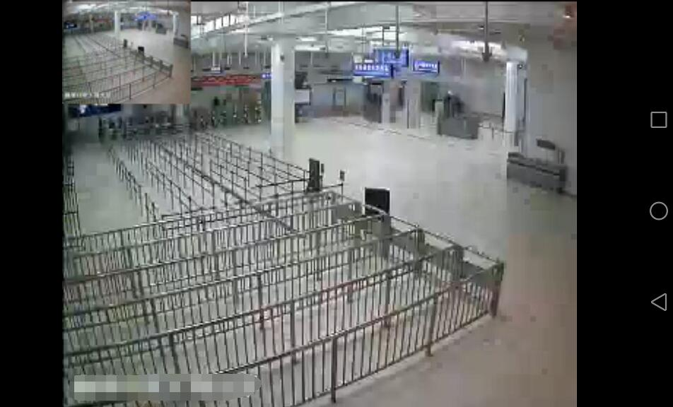
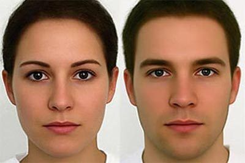
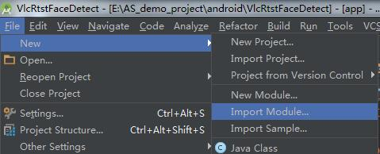
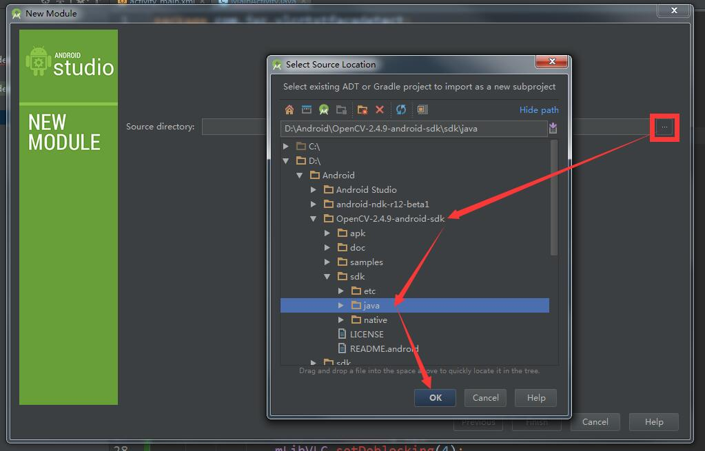
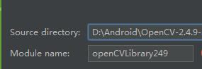
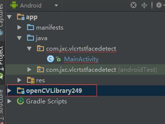
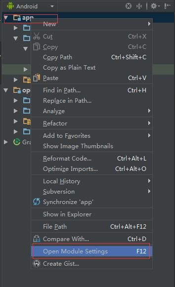
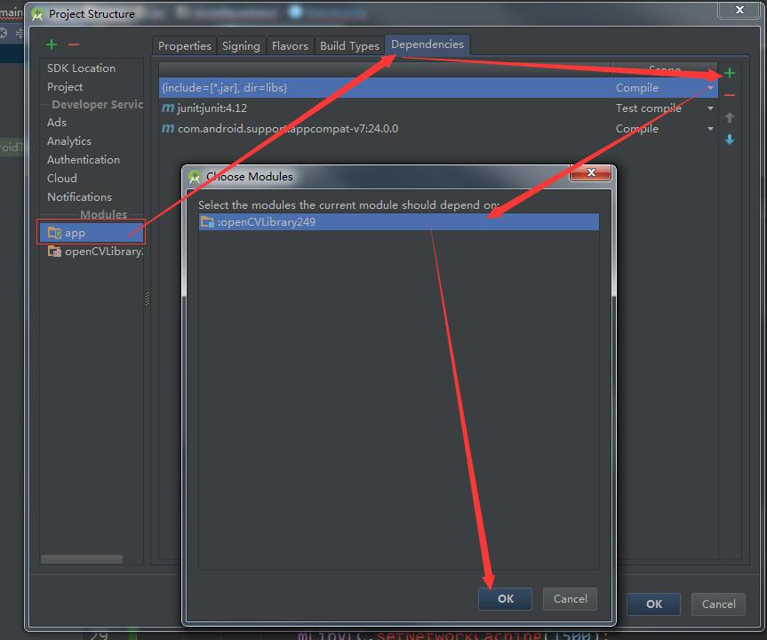
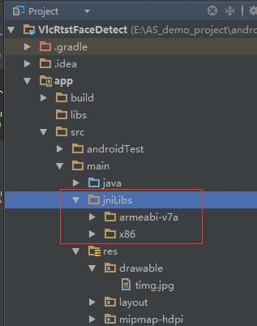
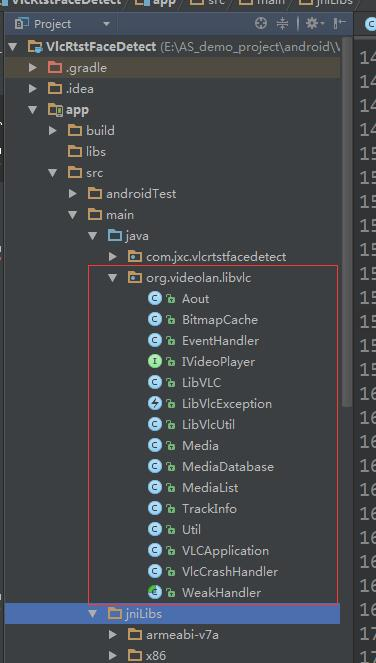

最近项目上需要在Android客户端 通过获取 RTSP 的视频进行实时人脸检测， 要做就就是以下几点：
1、通过VLC 获取 获取RTSP
2、对VLC中播放的视频进行实时截屏并保存在SD卡中
3、用opencv对截屏后的文件进行 人脸检测
4、用截取到的人脸显示在主界面上
我在网上找到了一个公共的RTSP地址，作为RTSP视频数据源
先看看VLC获取RTSP效果：
vce1xMv1wtTNvL7Nyse92MbBuvO1xMv1wtTNvKOs0tG+rbGjtObU2lNEv6jW0MHLoaM8L3A+DQrXoqO60vLOqrmrv6q1xFJUU1DW0MO709DIy8Gzo6zL+dLU1rvE3NPD0rvVxc28xqzX986qsuLK1A0KPHA+v7S/tMjLwbO87LLitcTQp7n7o7o8YnIgLz4NCjxpbWcgYWx0PQ=="这里写图片描述" src="/uploadfile/Collfiles/20160908/20160908091845356.jpg" title="\" />
测试的原图是：

//VLC中将视频帧截取出来，并保存在SD卡中 //String picPath = snapShot(); // 一号位 //将图片转化为Bitmap对象后 //Bitmap oldBitmap = getFramePicture(picPath); //二号位 Bitmap oldBitmap = BitmapFactory.decodeResource(getResources(), R.drawable.timg); //三号位 //对保存在本地的图片进行人脸检测，并获取截到的所有人脸 final Listfaces = mFaceUtil.detectFrame(oldBitmap);
注：在测试的时候，把上面代码中的 一号位 和二号位的注释去掉， 并且注释掉三号位，这样就会对截屏后的图片直接进行人脸检测了。
1、将OpenCV 作为Model导入项目中（我用的版本是2.4.9）


注意，这里的java文件夹，我也会放到上传的压缩包里，可以直接按照同样的方式，导入Model




2、将Opencv中和VLC的so库复制进去，直接将我项目里的jniLibs文件夹复制到指定main文件夹下就可以了

3、将VLC中要用到的代码拷贝到项目里（直接从我项目里拷贝即可，也可以自己去官网下载）

4、配置一下AndroidManifest.xml
这样就配置的差不多了。
public class MainActivity extends Activity {
private static final String TAG = "MainActivity";
private VideoPlayerFragment fragment;
@Override
protected void onCreate(Bundle savedInstanceState) {
super.onCreate(savedInstanceState);
setContentView(R.layout.activity_main);
fragment = new VideoPlayerFragment();
//-------------
// 其他代码
//-------------
try {
EventHandler em = EventHandler.getInstance();
em.addHandler(handler);
LibVLC mLibVLC = Util.getLibVlcInstance();
if (mLibVLC != null) {
mLibVLC.setSubtitlesEncoding("");
mLibVLC.setTimeStretching(false);
mLibVLC.setFrameSkip(true);
mLibVLC.setChroma("RV32");
mLibVLC.setVerboseMode(true);
mLibVLC.setAout(-1);
mLibVLC.setDeblocking(4);
mLibVLC.setNetworkCaching(1500);
//测试地址
// String pathUri = "rtsp://218.204.223.237:554/live/1/66251FC11353191F/e7ooqwcfbqjoo80j.sdp";
String pathUri = "rtsp://218.204.223.237:554/live/1/67A7572844E51A64/f68g2mj7wjua3la7.sdp";
mLibVLC.playMyMRL(pathUri);
}
} catch (LibVlcException e) {
e.printStackTrace();
}
}
Handler handler = new Handler() {
public void handleMessage(Message msg) {
Log.d(TAG, "Event = " + msg.getData().getInt("event"));
switch (msg.getData().getInt("event")) {
case EventHandler.MediaPlayerPlaying:
case EventHandler.MediaPlayerPaused:
break;
case EventHandler.MediaPlayerStopped:
break;
case EventHandler.MediaPlayerEndReached:
break;
case EventHandler.MediaPlayerVout:
if (msg.getData().getInt("data") > 0) {
FragmentTransaction transaction = getFragmentManager().beginTransaction();
transaction.add(R.id.frame_layout, fragment);
transaction.commit();
}
break;
case EventHandler.MediaPlayerPositionChanged:
break;
case EventHandler.MediaPlayerEncounteredError:
AlertDialog dialog = new AlertDialog.Builder(MainActivity.this)
.setTitle("提示信息")
.setMessage("无法连接到网络摄像头，请确保手机已经连接到摄像头所在的wifi热点")
.setNegativeButton("知道了", new DialogInterface.OnClickListener() {
@Override
public void onClick(DialogInterface dialogInterface, int i) {
finish();
}
}).create();
dialog.setCanceledOnTouchOutside(false);
dialog.show();
break;
default:
Log.d(TAG, "Event not handled ");
break;
}
}
};
}
这里的作用就是先初始化一下VLC，然后判断能否加载到RTSP视频，如果加载不到，就应该是 你的安卓手机 和 拍摄RTSP的摄像头 不处于同一个网络下， 这个需要自行处理，一般连接同一个WIFI就可以了。 我这里的测试地址是 网上公开的，大家都可以获取到RTSP视频的。
public class VideoPlayerFragment extends Fragment implements IVideoPlayer {
public final static String TAG = "VideoPlayerFragment";
private SurfaceHolder surfaceHolder = null;
private LibVLC mLibVLC = null;
private int mVideoHeight;
private int mVideoWidth;
private int mSarDen;
private int mSarNum;
private int mUiVisibility = -1;
private static final int SURFACE_SIZE = 3;
private SurfaceView surfaceView = null;
private FaceRtspUtil mFaceUtil;
//截图后的图片的宽度
private static final int PIC_WIDTH = 1280;
//截图后的图片的高度
private static final int PIC_HEIGHT = 720;
private String mPicCachePath;
private Timer mTimer;
@Override
public View onCreateView(LayoutInflater inflater, ViewGroup container, Bundle savedInstanceState) {
//存放VLC的截屏图片的文件夹路径
View view = inflater.inflate(R.layout.video_player, null);
init(view);
if (Util.isICSOrLater())
getActivity().getWindow().getDecorView().findViewById(android.R.id.content)
.setOnSystemUiVisibilityChangeListener(
new OnSystemUiVisibilityChangeListener() {
@Override
public void onSystemUiVisibilityChange(
int visibility) {
if (visibility == mUiVisibility)
return;
setSurfaceSize(mVideoWidth, mVideoHeight,
mSarNum, mSarDen);
if (visibility == View.SYSTEM_UI_FLAG_VISIBLE) {
Log.d(TAG, "onSystemUiVisibilityChange");
}
mUiVisibility = visibility;
}
});
try {
mLibVLC = LibVLC.getInstance();
if (mLibVLC != null) {
EventHandler em = EventHandler.getInstance();
em.addHandler(eventHandler);
}
} catch (LibVlcException e) {
e.printStackTrace();
Log.i(TAG, "onCreateView: " + e.getMessage());
}
return view;
}
@Override
public void onStart() {
super.onStart();
if (!mLibVLC.isPlaying()) {
mLibVLC.play();
}
}
@Override
public void onPause() {
super.onPause();
mLibVLC.stop();
mTimer.cancel();
}
private CascadeClassifier initializeOpenCVDependencies() {
CascadeClassifier classifier = null;
try {
InputStream is = getResources().openRawResource(R.raw.haarcascade_frontalface_alt);
File cascadeDir = getActivity().getDir("cascade", Context.MODE_PRIVATE);
File mCascadeFile = new File(cascadeDir, "haarcascade_frontalface_alt.xml");
FileOutputStream fos = new FileOutputStream(mCascadeFile);
byte[] bytes = new byte[4096];
int len;
while ((len = is.read(bytes)) != -1) {
fos.write(bytes, 0, len);
}
is.close();
fos.close();
classifier = new CascadeClassifier(mCascadeFile.getAbsolutePath());
} catch (Exception e) {
e.printStackTrace();
Log.e(TAG, "Error loading cascade", e);
}
return classifier;
}
@Override
public void onResume() {
super.onResume();
if (!OpenCVLoader.initDebug()) {
Log.e(TAG, "OpenCV init error");
}
CascadeClassifier classifier = initializeOpenCVDependencies();
mFaceUtil = new FaceRtspUtil(classifier, PIC_WIDTH, PIC_HEIGHT);
mTimer = new Timer();
//开启一个定时器，每隔一秒截屏检测一次
mTimer.schedule(new TimerTask() {
@Override
public void run() {
//VLC中将视频帧截取出来，并保存在SD卡中
// String picPath = snapShot();
//
// //将图片转化为Bitmap对象后
// Bitmap oldBitmap = getFramePicture(picPath);
Bitmap oldBitmap = BitmapFactory.decodeResource(getResources(), R.drawable.timg);
//对保存在本地的图片进行人脸检测，并获取截到的所有人脸
final List faces = mFaceUtil.detectFrame(oldBitmap);
if (faces == null || faces.isEmpty()) {
return;
}
getActivity().runOnUiThread(new Runnable() {
@Override
public void run() {
callBack.pushData(faces);
}
});
}
}, 1000, 1000);
}
/**
* 初始化组件
*/
private void init(View view) {
surfaceView = (SurfaceView) view.findViewById(R.id.main_surface);
surfaceHolder = surfaceView.getHolder();
surfaceHolder.setFormat(PixelFormat.RGBX_8888);
surfaceHolder.addCallback(mSurfaceCallback);
mPicCachePath = getSDPath() + "/FaceTest/";
File file = new File(mPicCachePath);
if (!file.exists()) {
file.mkdirs();
}
}
/**
* 截图
*/
private String snapShot() {
try {
String name = mPicCachePath + System.currentTimeMillis() + ".jpg";
//调用LibVlc的截屏功能，传入一个路径，及图片的宽高
if (mLibVLC.takeSnapShot(name, PIC_WIDTH, PIC_HEIGHT)) {
Log.i(TAG, "snapShot: 保存成功--" + System.currentTimeMillis());
return name;
}
Log.i(TAG, "snapShot: 保存失败");
} catch (Exception e) {
e.printStackTrace();
}
return null;
}
/**
* 传入文件路径，获取bitmap
*
* @param path 路径
*/
private Bitmap getFramePicture(String path) {
if (TextUtils.isEmpty(path) || mFaceUtil == null) {
Log.i(TAG, "faceDetect: 文件路径为空|| mFaceUtil == null");
return null;
}
File file = new File(path);
if (!file.exists()) {
return null;
}
return file2Bitmap(file);
}
private RtspCallBack callBack;
public void setRtspCallBack(RtspCallBack callBack) {
this.callBack = callBack;
}
public interface RtspCallBack {
void pushData(List faces);
}
@Override
public void onConfigurationChanged(Configuration newConfig) {
setSurfaceSize(mVideoWidth, mVideoHeight, mSarNum, mSarDen);
super.onConfigurationChanged(newConfig);
}
/**
* attach and disattach surface to the lib
*/
private final Callback mSurfaceCallback = new Callback() {
@Override
public void surfaceChanged(SurfaceHolder holder, int format, int width,
int height) {
if (format == PixelFormat.RGBX_8888)
Log.d(TAG, "Pixel format is RGBX_8888");
else if (format == PixelFormat.RGB_565)
Log.d(TAG, "Pixel format is RGB_565");
else if (format == ImageFormat.YV12)
Log.d(TAG, "Pixel format is YV12");
else
Log.d(TAG, "Pixel format is other/unknown");
mLibVLC.attachSurface(holder.getSurface(),
VideoPlayerFragment.this);
}
@Override
public void surfaceCreated(SurfaceHolder holder) {
}
@Override
public void surfaceDestroyed(SurfaceHolder holder) {
mLibVLC.detachSurface();
}
};
public final Handler mHandler = new VideoPlayerHandler(this);
private static class VideoPlayerHandler extends
WeakHandler {
public VideoPlayerHandler(VideoPlayerFragment owner) {
super(owner);
}
@Override
public void handleMessage(Message msg) {
VideoPlayerFragment activity = getOwner();
if (activity == null) // WeakReference could be GC'ed early
return;
switch (msg.what) {
case SURFACE_SIZE:
activity.changeSurfaceSize();
break;
}
}
}
private void changeSurfaceSize() {
// get screen size
int dw = getActivity().getWindow().getDecorView().getWidth();
int dh = getActivity().getWindow().getDecorView().getHeight();
// getWindow().getDecorView() doesn't always take orientation into
// account, we have to correct the values
boolean isPortrait = getResources().getConfiguration().orientation == Configuration.ORIENTATION_PORTRAIT;
if (dw > dh && isPortrait || dw < dh && !isPortrait) {
int d = dw;
dw = dh;
dh = d;
}
if (dw * dh == 0)
return;
// compute the aspect ratio
double ar, vw;
double density = (double) mSarNum / (double) mSarDen;
if (density == 1.0) {
/* No indication about the density, assuming 1:1 */
ar = (double) mVideoWidth / (double) mVideoHeight;
} else {
/* Use the specified aspect ratio */
vw = mVideoWidth * density;
ar = vw / mVideoHeight;
}
// compute the display aspect ratio
double dar = (double) dw / (double) dh;
if (dar < ar)
dh = (int) (dw / ar);
else
dw = (int) (dh * ar);
surfaceHolder.setFixedSize(mVideoWidth, mVideoHeight);
LayoutParams lp = surfaceView.getLayoutParams();
lp.width = dw;
lp.height = dh;
surfaceView.setLayoutParams(lp);
surfaceView.invalidate();
}
private final Handler eventHandler = new VideoPlayerEventHandler(this);
private static class VideoPlayerEventHandler extends
WeakHandler {
public VideoPlayerEventHandler(VideoPlayerFragment owner) {
super(owner);
}
@Override
public void handleMessage(Message msg) {
VideoPlayerFragment activity = getOwner();
if (activity == null)
return;
Log.d(TAG, "Event = " + msg.getData().getInt("event"));
switch (msg.getData().getInt("event")) {
case EventHandler.MediaPlayerPlaying:
Log.i(TAG, "MediaPlayerPlaying");
break;
case EventHandler.MediaPlayerPaused:
Log.i(TAG, "MediaPlayerPaused");
break;
case EventHandler.MediaPlayerStopped:
Log.i(TAG, "MediaPlayerStopped");
break;
case EventHandler.MediaPlayerEndReached:
Log.i(TAG, "MediaPlayerEndReached");
activity.getActivity().finish();
break;
case EventHandler.MediaPlayerVout:
activity.getActivity().finish();
break;
default:
Log.d(TAG, "Event not handled");
break;
}
}
}
@Override
public void onDestroy() {
if (mLibVLC != null) {
mLibVLC.stop();
}
EventHandler em = EventHandler.getInstance();
em.removeHandler(eventHandler);
super.onDestroy();
}
public void setSurfaceSize(int width, int height, int sar_num, int sar_den) {
if (width * height == 0)
return;
mVideoHeight = height;
mVideoWidth = width;
mSarNum = sar_num;
mSarDen = sar_den;
Message msg = mHandler.obtainMessage(SURFACE_SIZE);
mHandler.sendMessage(msg);
}
@Override
public void setSurfaceSize(int width, int height, int visible_width,
int visible_height, int sar_num, int sar_den) {
mVideoHeight = height;
mVideoWidth = width;
mSarNum = sar_num;
mSarDen = sar_den;
Message msg = mHandler.obtainMessage(SURFACE_SIZE);
mHandler.sendMessage(msg);
}
private String getSDPath() {
boolean hasSDCard = Environment.getExternalStorageState().equals(Environment.MEDIA_MOUNTED);
if (hasSDCard) {
return Environment.getExternalStorageDirectory().toString();
} else
return Environment.getDownloadCacheDirectory().toString();
}
private Bitmap file2Bitmap(File file) {
if (file == null) {
return null;
}
try {
FileInputStream fis = new FileInputStream(file);
return BitmapFactory.decodeStream(fis);
} catch (FileNotFoundException e) {
e.printStackTrace();
}
return null;
}
}
主要看 onResume 方法
1、初始化opencv：OpenCVLoader.initDebug()
2、初始化用于人脸检测的分类级联器：
CascadeClassifier classifier = initializeOpenCVDependencies();
3、然后创建一个定时器，每个1秒截屏检测一次
mTimer = new Timer();
mTimer.schedule(….);
public class FaceRtspUtil {
private static final String TAG = "FaceUtil";
private Mat grayscaleImage;
private CascadeClassifier cascadeClassifier = null;
public FaceRtspUtil(CascadeClassifier cascadeClassifier, int width, int height) {
this.cascadeClassifier = cascadeClassifier;
//人脸的宽高最小也要是原图的height的 10%
grayscaleImage = new Mat(height, width, CvType.CV_8UC4);
}
/**
* 给一个图片，检测这张图片里是否有人脸
*
* @param oldBitmap 图片
* @return 返回一个List集合，里面存放所有检测到的人脸
*/
public List detectFrame(Bitmap oldBitmap) {
Mat aInputFrame = new Mat();
if (oldBitmap == null) {
return null;
}
Utils.bitmapToMat(oldBitmap, aInputFrame);
if (grayscaleImage == null) {
Log.i(TAG, "detectFrame: aInputFrame == null || grayscaleImage == null");
return null;
}
Imgproc.cvtColor(aInputFrame, grayscaleImage, Imgproc.COLOR_RGBA2RGB);
MatOfRect faces = new MatOfRect();
// 使用级联分类器 检测人脸
if (cascadeClassifier != null) {
//不获取60*60以下的人脸
cascadeClassifier.detectMultiScale(grayscaleImage, faces, 1.1, 2, 2,
new Size(60, 60), new Size());
}
//facesArray里保存所有检测到的人脸的位置及大小
Rect[] facesArray = faces.toArray();
if (facesArray == null || facesArray.length == 0) {
//如果没有人脸，直接退出
Log.i(TAG, "detectFrame: 该图片中没有人脸");
return null;
}
//保存该帧中的所有人脸
List bitmaps = new ArrayList<>();
Bitmap tmpBitmap = Bitmap.createBitmap(aInputFrame.width(), aInputFrame.height(), Bitmap.Config.RGB_565);
Utils.matToBitmap(aInputFrame, tmpBitmap);
for (Rect aFacesArray : facesArray) {
Bitmap bitmap = Bitmap.createBitmap(tmpBitmap, aFacesArray.x, aFacesArray.y,
aFacesArray.width, aFacesArray.height);
bitmaps.add(bitmap);
}
//回收帧图片
tmpBitmap.recycle();
return bitmaps;
}
}
传入一张图片，返回 脸的List集合
这里我们使用 接口回调 的方法将人脸 从Fragment中传到Activity去
在Activity中接收到人脸以后，创建ImageView将人脸显示出来
final LinearLayout ll_faces = (LinearLayout) findViewById(R.id.ll_faces);
fragment.setRtspCallBack(new VideoPlayerFragment.RtspCallBack() {
@Override
public void pushData(final List faces) {
//清除所有的子View
ll_faces.removeAllViews();
for (int i = 0; i < faces.size(); i++) {
ImageView image = new ImageView(MainActivity.this);
image.setImageBitmap(faces.get(i));
LinearLayout.LayoutParams params = new LinearLayout.LayoutParams(-2, -2);
ll_faces.addView(image, params);
}
}
});
至此，基本就弄完了